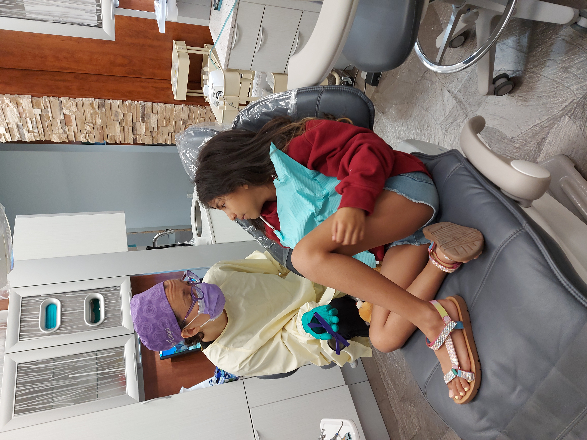
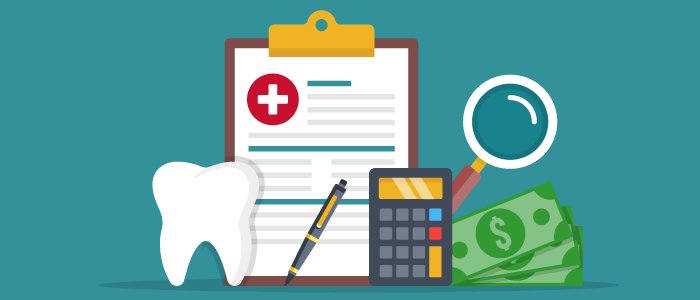

Your Dental Provider

Dentists are trained professionals, we expect our dentist to be compassionate, understanding and skilled to fullfill
all our dental needs. It is important to know that even general practioners or family dentist tend to have areas of
focus or gear towards sections of the population.
If your greatest barrier to getting dental work is fear and anxiety, you want to make sure your dentist has options,
for example oral sedation or nitrous gas. Also, word of mouth and friends recommendations can sometimes help find a
dentist with a gentle touch and anesthesia or needle technique.
Experienced dentist tend to be faster when delivering treatment as opposed to recent graduates. If you are planning
to bring your family you want to make sure there are dentist in the clinic who are comfortable seeing children and
perform treatment on young ones on a regular basis. Depending on your child's age and behaviour they might need to be
seen by pediatric or child specialist dentist. Likewise if you have elder relatives you want to make sure mobility
accomodations can be made and denture services exist
Ff you require complex or extensive dental treatment, for example implants, you want to make sure your doctor has a
full skill set or offers in house specialty treaments, sometimes you might need to be referred to a specialist outside
your family dentist office.
The link below offers a list of Manitoba dentist from the Manitoba Dental Association Registry
Manitoba Dental Association -
Dentist Registry
Your Insurance
This is very important, you want to ask questions like if the office direct bills your insurance before you become a patient
at a dental office. Direct billing is a convenient feature for patients, otherwise you have to pay upfront for service received
at each appointment and wait for your insurance to reimburse you.
It is strongly recommended that you review your benefits plan, once you become a patient at a dental office if you are not happy
with with your experience, it becomes complicated to shop around for more options. Your insurance policy has a limitation to the
frequency of certain services. For example a dental examination might be covered once every six months only. The first dental office
that you go to will be able to bill your insurance for initial records. This will not be the case if you go to a second or third
office in a short period of time, even if you still have unused coverage in your plan, for example $2000 per year per person.
Location

If you are someone with a busy schedule, the location of your dental office will be crucial to make it on time to your appointments, as well as coordinating appointments for your family. Close to your home is often best, however often times people will make a trip if they have found a dental practioner they like, workplace is another option for location convenience.